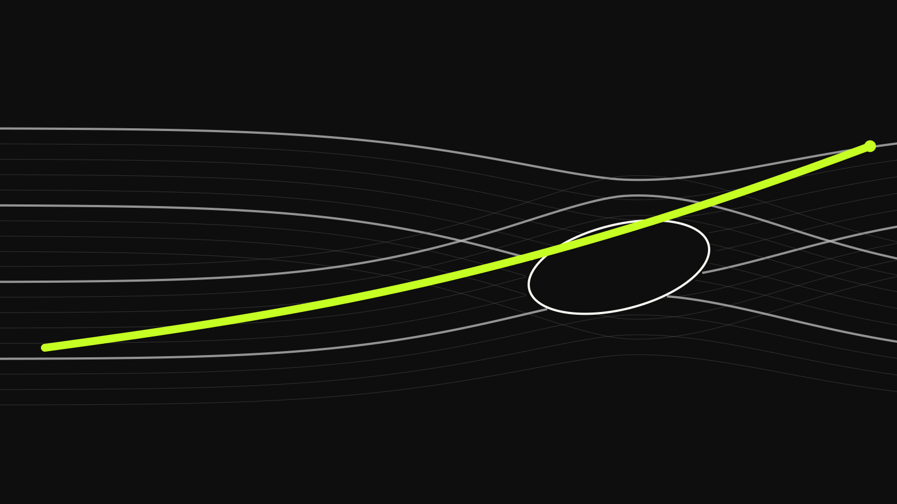

Bizarre Industries / Astronomical Atlas / PROVISIONAL v1 / NONPUBLISHABLE
Precision Panel
A calibrated, metadata-first composition for operational and technical surfaces.

Bizarre Industries / Astronomical Atlas / PROVISIONAL v1 / NONPUBLISHABLE
A calibrated, metadata-first composition for operational and technical surfaces.
